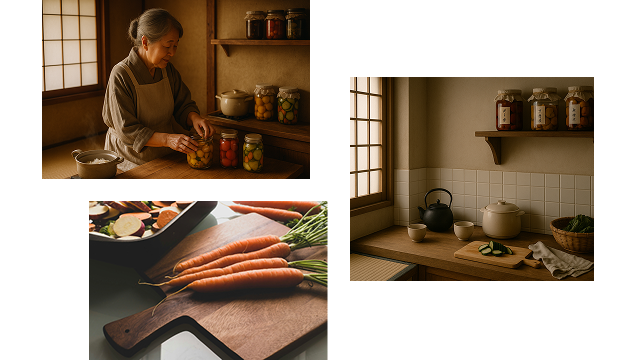
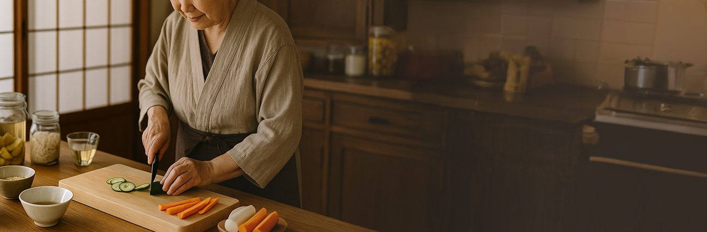
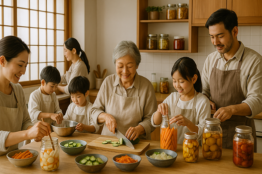

品牌故事

阿嬤留下來的，不只是食譜
YENMADE 起點，是阿嬤廚房裡的幾罐玻璃瓶。小時候每次家人團聚，餐桌上總有她醃的小黄瓜、木耳、海帶芽，每道都簡單，卻讓人一直想再添一碗飯。
長大後才發現，這些味道，其實是家的溫度。
我們希望把這份「熟悉卻被遺忘的好味道」保留下來，也讓它在更多人的生活中發光。


我們相信，好味道
品牌理念
我們相信，好味道
應該慢慢做，也要吃得安心
YENMADE 醃造所堅持少量製造，不是追求快速，而是重視每一道工序的用心。
我們選用天然食材，不添加防腐劑與化學調味，只用最簡單、最乾淨的方式，保留食物原本的風味。
因為我們知道，健康的飲食，不需要複雜，只需要真實。每一罐，都像家人親手做的那樣安心，是你日常裡也可以信任的好味道。
我們的團隊

一口家的味道，一份傳承的心意
YENMADE 醃造所不是一間大公司，而是一群家人一起完成的夢。我們的團隊成員，全部都是親戚，從阿嬤、姑姑到我們這一代，一起把家裡流傳下來的味道整理、改良、分享出去。 我們希望把這份屬於家庭的好味道，好好保存下來，也慢慢傳承出去。每一罐醃製物，不只是產品，更是我們一家人一起做出來的心意與溫度。
